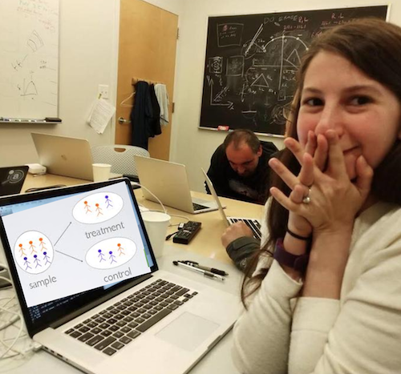

02 - Randomised Experiments#
The Golden Standard#
이전 세션에서, 우리는 연관성(association)이 어떻게 인과성(causation)과 다른지 살펴보았습니다. 우리는 또한 연관성(association)을 인과성(causation)으로 만드는 데 필요한 것들이 무엇인지도 살펴보았습니다.
\(E[Y|T=1] - E[Y|T=0] = \underbrace{E[Y_1 - Y_0|T=1]}_{ATT} + \underbrace{\{ E[Y_0|T=1] - E[Y_0|T=0] \}}_{BIAS}\)
다시 떠올려보자면, 연관성은 편향이 존재하지 않을때 비로소 인과성이 될 수 있습니다. \(E[Y_0|T=0]=E[Y_0|T=1]\)를 만족할 때 편향은 없을 것이라고 말할 수 있습니다. 즉, 타겟군과 대조군이 처치를 받은 것을 제외하고 타겟군과 대조군이 동등하거나 유사하다면 연과성은 인과관계가 될 것입니다. 혹은 더 전문적인 표현을 사용하자면, 처치를 받지 않은 군의 결과가 처치를 받은 군의 반사실적 결과와 동등할때 연관성이 인과관계가 되는 것이 성립됩니다. 이러한 반사실적 결과가 처치를 받지 않은 타겟군의 결과와 같다는 것을 기억해야할 것입니다.
제가 생각하기에 우리는 수식을 통해 어떻게 연관성이 인과성이 되는지 비교적 잘 설명한 것 같습니다. 그러나 이는 이론에만 국한됩니다. 이제 우리는 이러한 편향을 없앨 수 있는 첫번째 툴, 무작위 실험(Randomised Experiments) 에 대해서 살펴볼 것입니다. 무작위 실험은 타겟군(Treatment Group)과 대조군(Control group)에 개개인을 랜덤으로 분배하는 방식입니다. 처치를 받는 타겟군의 비율이 꼭 50%일 필요는 없습니다. 여러분의 표본(samples)의 10%만이 처치를 받는 실험을 진행할 수도 있습니다.
랜덤 분배는 잠재적 결과(potential outcomes)를 처치(treatment)로부터 독립적으로 만듦으로써 편향을 제거합니다.
\((Y_0, Y_1) \perp\!\!\!\perp T\)
물론 처음에는 혼란스러울 수 있습니다. (저도 혼란스러웠습니다.) 하지만 걱정하지 마세요. 제가 더 친절히 설명하겠습니다! 도출된 결과(Outcome Y)가 처치로부터 독립적이라면, 이는 처치가 전혀 효과가 없었다는 것을 암시하는 것이 아닐까요? 맞습니다. 하지만 제가 결과에 대해 말하고 있는 것이 아님을 명심하세요. 대신, 저는 잠재적 결과(potential outcomes) 에 대해서 말할거에요. 잠재적 결과(potential outcomes)란, 결과가 만약 처치(\(Y_1\))와 대조(\(Y_0\))의 영향 아래 있었다면 어땠을까를 가정하는 것입니다. 무작위 시도에서는, 처치가 결과의 원인이 된다고 생각하기 때문에 결과가 처치로부터 독립적이길 바라지 않습니다.

잠재적 결과(potential outcomes)가 처치로부터 무관하다는 것은 기대대로라면 처치군(Treatment group; 처치를 받은 그룹)이나 대조군(Control group; 처치를 받지 않은 그룹)에서도 같은 결과가 나와야한다는 것을 의미합니다. 더 간단히 말해보면, 처치군(타겟군)과 대조군은 비교가 가능하다는 것입니다! 또한 이 말은 처치군이 실험자에게 처치 이전의 결과에 대해 그 어떤 정보도 주지 않는다는 것을 의미하기도 합니다. 결과적으로 \((Y_0, Y_1) \bot T\) 수식은 ‘가한 처치(treatment)’가 처치군의 결과와 대조군의 결과 사이에서 발생한 유일한 차이라는 것을 의미합니다. 이것을 확인하기 위해 독립성이 아래와 같은 내용을 내포하고 있다는 것을 알아야 합니다.
\(E[Y_0|T=0] = E[Y_0|T=1] = E[Y0]\)
이미 우리가 확인한대로 이렇게도 만들어볼 수 있겠죠.
\(E[Y|T = 1] - E[Y|T = 0] = E[Y_1 - Y_0] = ATE\)
따라서, 랜덤 분배(Randomization)는 처치 효과(Treatment effect)라고 하는 타겟군과 대조군 간의 작은 차이를 만들 수 있는 것입니다.
In a School Far, Far Away#
2020년에 코로나 바이러스의 전세계적인 유행으로 인해 기업들은 사회적 거리두기에 적응해야만 했습니다. 배달 서비스가 확산되었고, 대기업들은 원격 근무 전략으로 전환했습니다. 학교도 다르지 않았습니다. 많은 학교들이 온라인 학습 환경 구축을 시작했습니다.
위기가 시작된지 4개월이 지난 지금, 많은 사람들은 이러한 변화들이 지속될 수 있을지 의문을 가집니다. 온라인 학습 환경이 차별화된 장점을 가지고 있다는 것엔 의심의 여지가 없습니다. 우선 부동산과 교통의 측면에서 절약을 할 수 있다는 점에서 저렴합니다. 또한 정해진 선생들로부터만 교육을 제공받는 것이 아닌 조금 더 디지털적으로, 즉, 전세계의 세계적인 수준의 학습 콘텐츠를 활용할 수 있다는 것입니다. 이러한 장점들에도 불구하고 우리는 온라인 수업이 학생들의 학습 퍼포먼스에 부정적인 영향을 미치는지 긍정적인 영향을 미치는지 여전히 궁금해합니다.
이에 대한 한 가지 답으로, 주로 온라인 수업을 진행하는 수업의 학생들과 오프라인 수업 장소에서 강의를 듣는 학생들을 비교하는 것입니다. 우리가 알고 있는 대로 이것은 최고의 접근 방식은 아니긴 합니다. 온라인 수업이 실제 오프라인 수업이었어도 평균적인 학생들보다 더 잘하는 훈련된 학생들만을 끌어들일 수도 있기 때문입니다. 이러한 경우에선 처치를 받은 집단이 학업적으로 처치를 받지 않은 그룹보다 좋은 결과를 보여주는 긍정 편항(positive bias)을 발견할 수 있습니다: \(E[Y_0|T=1] > E[Y_0|T=0]\)
또한 반대 상황을 생각해보자면, 온라인 수업이 더 저렴하여 공부 외에 다른 일들을 해야하는 부유하지 않은 학생들로 구성되어 있을 수도 있습니다. 이런 경우에는 이 학생들이 오프라인을 수업을 듣는다할지라도 실제 오프라인 수업을 듣는 학생들보다 좋은 학업 퍼포먼스를 보여주지 못할 수도 있습니다. 이런 상황이 발생할 경우, 우린 처치를 받은 그룹이 처치를 받지 않은 그룹보다 학업적 성과가 나쁘다는 다른 측면의 편향: 부정 편향(negative bias)을 가질 수 있습니다: \(E[Y_0|T=1] < E[Y_0|T=0]\)
그러므로 우리가 이런 간단한 비교를 하더라도, 이런 비교들은 설득력이 없을 것이라는 것입니다. 어떤 방식으로 하든지 우리는 우리가 발견하고자 하는 인과 효과( causal effect)를 가리고 있는 여러 편향(bias)들이 없다고 절대 확신할 수 없습니다.
이를 해결하기 위해, 우리는 처치군과 처치를 진행하지 않은 군을 비교가능하게 만들어야 합니다. \(E[Y_0|T=1] = E[Y_0|T=0]\) 학생들을 온라인 수업과 현 방식의 수업(대면 수업)에 무작위로 배정하는 것이 하나의 방법이 될 수 있겠네요. 만약 우리가 그렇게 한다면, 처치를 받은 그룹과 받지 않은 그룹은 그들이 받은 처치를 제외하고는 평균적으로 같아야 할 것입니다.
놀랍게도 한 경제학자들은 우리를 위해 이 작업을 미리 해두었습니다. 그들은 첫번째 그룹의 학생들은 대면 강의를, 두번째 학생들은 온라인 수업을, 세번째 그룹의 학생들에게는 혼합형 수업을 듣도록 랜덤 배정을 진행하였습니다. 또한 학기 말에 진행한 시험에 대한 데이터를 모았죠.
데이터는 아래와 같습니다.
Show code cell source
import pandas as pd
import numpy as np
data = pd.read_csv("./online_classroom.csv")
print(data.shape)
data.head()
(323, 10)
| gender | asian | black | hawaiian | hispanic | unknown | white | format_ol | format_blended | falsexam | |
|---|---|---|---|---|---|---|---|---|---|---|
| 0 | 0 | 0.0 | 0.0 | 0.0 | 0.0 | 0.0 | 1.0 | 0 | 0.0 | 63.29997 |
| 1 | 1 | 0.0 | 0.0 | 0.0 | 0.0 | 0.0 | 1.0 | 0 | 0.0 | 79.96000 |
| 2 | 1 | 0.0 | 0.0 | 0.0 | 0.0 | 0.0 | 1.0 | 0 | 1.0 | 83.37000 |
| 3 | 1 | 0.0 | 0.0 | 0.0 | 0.0 | 0.0 | 1.0 | 0 | 1.0 | 90.01994 |
| 4 | 1 | 0.0 | 0.0 | 0.0 | 0.0 | 0.0 | 1.0 | 1 | 0.0 | 83.30000 |
우리는 323개의 샘플들을 볼 수 있습니다. 큰 데이터는 아니지만, 우리가 무언갈 해볼 순 있겠습니다. 인과 효과를 추정하기 우해 우리는 각 처치 그룹의 평균 점수를 내볼 수 있겠네요.
Show code cell source
(data
.assign(class_format = np.select(
[data["format_ol"].astype(bool), data["format_blended"].astype(bool)],
["online", "blended"],
default="face_to_face"
))
.groupby(["class_format"])
.mean())
| gender | asian | black | hawaiian | hispanic | unknown | white | format_ol | format_blended | falsexam | |
|---|---|---|---|---|---|---|---|---|---|---|
| class_format | ||||||||||
| blended | 0.550459 | 0.217949 | 0.102564 | 0.025641 | 0.012821 | 0.012821 | 0.628205 | 0.0 | 1.0 | 77.093731 |
| face_to_face | 0.633333 | 0.202020 | 0.070707 | 0.000000 | 0.010101 | 0.000000 | 0.717172 | 0.0 | 0.0 | 78.547485 |
| online | 0.542553 | 0.228571 | 0.028571 | 0.014286 | 0.028571 | 0.000000 | 0.700000 | 1.0 | 0.0 | 73.635263 |
너무 간단하죠? 우리는 대면 수업(face_to_face)이 평균 약 78.55점인에 반해, 온라인 수업(online)의 경우 평균 73.63점을 보여주고 있습니다. 온라인 수업을 지지자들에게 좋은 소식은 아니겠네요. 고로 온라인 수업의 \(ATE\)는 약 -4.91겠네요. 이는 온라인 수업을 듣는 학생들은 평균적으로 약 5점 낮은 점수를 받는다는 것을 의미합니다. 바로 이거죠. 여러분은 대면 수업을 받을 형편이 되지 않는 가난한 학생들이 온라인 수업을 수강할 것이라고 걱정할 필요가 없습니다. 그러므로 여러분은 다른 처치를 받은 학생들이 그들이 받은 처치가 그 외 다른 처치들과는 다를 것이라고 걱정할 필요는 없다는 것이죠.(어떤 그룹이 편향된 특성을 가지고 있을 것이라고 걱정할 필요가 없다는 것이죠.) 무작위 실험은 바로 이런 차이들을 제거하기 위해 설계되었습니다.
이러한 이유들로 인해 랜덤화(randomisation)가 잘 이루어졌는지(또는 올바른 데이터를 살펴보고 있는지) 확인하는 방법은 처치를 받은 것이 전처리 변수에서 처치를 받지 않은 것과 동일한지를 확인하는 것입니다. 현재 우리가 보고 있는 데이터는 성별과 민족에 대한 정보 또한 가지고 있어 그룹 간에 유사한 패턴이 나타나는지를 볼 수 있습니다. 우리는 gender, asian, hispanic , white 변수에서는 비교적 비슷한 결과가 나오는 것을 알 수 있습니다. 하지만 black 변수에서는 다른 경향이 보이네요. 이러한 경향은 작은 데이터셋에서 어떤 일이 일어나는지 확인할 수 있게끔 합니다. 무작위 실험을 한다 할지라도, 우연히 한 그룹의 경향성이 다른 그룹과는 다를 수 있습니다. 큰 표본에서는 이러한 차이가 사라지는 편이죠.
The Ideal Experiment#
무작위 실험(Randomised experiments), 무작위 통제 실험(Randomised Controlled Trials: RCT)이 인과 효과(causal effect)를 확인할 수 있는 가장 신뢰할만한 방법입니다. 또한 인과 관계를 가장 직접적으로 확인할 수 있는 기술이며, 엄청난 설득력을 갖추고 있죠. 그렇기 때문에 많은 국가들이 신약의 효과성을 보여주고자 할 때 필수적으로 활용하고 있죠. 조금 더 끔찍한 비유를 하자면, RCT를 아바타(Avatar: The Last Airbender, 아바타: 아앙의 전설, 미국 니켈로디언에서 2005년부터 방영한 애니메이션)의 Aang으로 생각할 수 있습니다. RCT를 제외한 다른 기술들은 Sokka에 더 가깝습니다. Sokka는 매우 멋지고 여기저기서 멋진 묘기를 부릴 수 있지만 Aang은 네 가지 요소(물, 흙, 불, 공기)를 구부려 영적 세계와 연결시킬 수 있습니다. 이렇게 생각해 볼까요? 만약 우리가 할 수 있다면, RCT는 인과 관계를 알아내기 위해 우리가 할 수 있는 모든 것이 될 것입니다. 잘 설계된 RCT는 모든 과학자들의 꿈이라고 할 수 있죠.

안타깝게도, RCT 방법론은 비용이 매우 많이 들어간다든지 비윤리성을 가지고 있다든지 하는 한계가 있습니다. 때로는 실험자가 처치를 진행하는 매커니즘을 쉽게 통제하지 못할 때도 있죠. 이렇게 생각해볼까요? 임신 중 흡연이 출산 뒤 아이의 체중에 어떤 영향을 미치는지 측정해보고자 한다고 해봅시다. 우리가 의사라 할지라도 우리는 몇 명의 임산부를 무작위로 선정해 임신 중에 흡연을 하게끔 절대 강요할 수 없을 거에요. 또다른 예시를 들어보자면 여러분이 큰 은행에서 일하고 있고, 신용 한도가 고객의 이탈에 어떠한 영향을 미치는지 추정할 필요가 있다고 해봅시다. 우리의 고객들에게 무작위로 신용 한도를 주는 것에는 너무 큰 비용이 들어갈꺼에요. 또 최저임금 인상이 실업률에 미치는 영향을 조사하고 싶다고요? 우리는 개별 국가들에게 최저 임금을 조정하라고 할 수 없을 거에요. 이제 여러분이 이해하셨을 거라 생각합니다.
이런 방법도 있을 거에요. 우리가 차후에 조건부 무작위 실험을 진행한다 하고 완전 무작위 실험 비용을 낮추는 방법 또한 고려할 수 있겠지만, 비윤리적이거나 실현이 불가능한 실험들에 대해서는 할 수 있는게 여전히 없을 꺼에요. 그럼에도 불구하고, 우리가 인과적인 질문을 던질 때마다, 어떤 것이 이상적인 실험인가에 대해 생각하는 것은 여전히 가치 있을 거에요. 항상 스스로에게 질문을 던져보세요. 인과적인 관계를 밝혀낼 때 어떤 것이 완벽한 실험이 될 수 있을 건가에 대해서요. 그럼으로써 우리는 이상적인 실험 없이도 어떻게 우리가 인과 효과를 발견할 수 있을지에 다가가는 하나의 방법이 될 것입니다.
The Assignment Mechanism#
완전 무작위 실험(Randomised Experiment)에서 누구에게 처치를 진행할 것인가는 완전 랜덤입니다. 다음 아티클들을 통해서도 알게 되겠지만, 모든 인과 추론 기술들은 누구에게 처치를 진행하는지를 알고 싶어 하죠. 만약 우리가 이 매커니즘(Assignment Mechanism)을 잘 이해하게 된다면, 처치가 랜덤이 아니라 할지라도 인과 추론은 더 신뢰할만 할 것입니다. (assignment mechanism: 측정 가능한 공변량 X가 충분히 주어진다면 처치(Treatment)는 Y(결과)와 관계 없이 랜덤하게 주어진다는 가정)
안타깝게도 처치가 가해지는 방식(Assignment Mechanism)은 데이터를 살펴본다고 해서 쉽게 발견하긴 어려운 것이죠. 예를 들어 우리가 고등 교육과 부의 상관관계에 대한 데이터를 가지고 있다 하더라도, 데이터를 통해 어떤 것이 원인에 있는지를 쉽게 알긴 어렵습니다. 우리는 우리의 도메인(예를 들어 세상이 어떻게 흘러가는지에 대한 지식)을 활용하여 그럴듯해 보이는 주장을 해야할 것입니다. 이런 주장을 할 수 있겠네요. 학교가 사람들을 교육하고, 그래서 그들을 더 생산적으로 만든다면, 결국 그들을 더 높은 임금을 받는 직업으로 이끄는 것일까? 아니면 여러분이 교육에 대해 비관적이라면, 학교는 생산성을 높이기 위해 그 어떤 것도 하지 않는다고 말할 수도 있겠네요. 그리고 이건 사실 있어보이기만 한 상관관계죠. 왜냐하면 부유한 가정들에서만 그들의 자식들을 높은 학위를 받게하기 위한 교육을 할 여유가 있기 때문이죠.
인과적 질문에서는 우리는 두 가지의 논쟁을 하게 될 것이죠. ‘X가 Y의 원인’이라고 하거나, ‘제 3의 변수인 Z가 X와 Y의 원인이기 때문에 X와 Y의 상관 관계는 거짓이다’와 같은 것들이요. 이러한 이유들로 인해 우리가 Assignment Mechanism에 대해 잘 알게 된다면, 우리는 훨씬 더 설득력 있는 인과적 답변을 할 수 있을 것입니다. 바로 이런 것들이 인과 추론을 더더욱 재미있게 만드는 것이죠! 머신 러닝은 적절한 순서에 따라 버튼들을 누르는 것에 불과하지만, 인과 추론은 데이터가 생산되는 과정에 대해 진지한 사고를 요하는 것이죠.
Key Ideas#
우리는 지금까지 무작위 실험(Randomised Experiments)이 왜 인과적 영향을 추론하는 가장 간단하고 가장 효과적인 방법인지를 살펴보았습니다. 바로 처치군(T-group)과 대조군(C-group)을 비교 가능하게끔 하는 것이죠. 슬프게도 우리는 무작위 실험을 항상 할 순 없지만, 우리가 할 수 있는 이상적인 실험이 무엇인지를 생각하는 것은 여전히 도움이 됩니다.
통계에 익숙한 누군가는 지금 제가 인과 관계의 추정치에 대해 살펴보지 않았다고 항의하고 있을 수도 있습니다. 4.91점의 하락이 우연에 의해 일어난 것이 아니라는 것을 어떻게 알 수 있나요? 그 차이가 통계적으로 유의한지 어떻게 알 수 있나요? 그리고 이 질문들은 옳습니다. 걱정하지 마세요. 곧 통계적 개념들에 대해 다룰 예정이니까요!
References#
저는 이 책 전체를 Joshua Angrist, Alberto Abadie, Christopher Walters의 놀라운 계량경제학 수업에 대한 찬사로 생각하고 싶습니다. 여기 있는 대부분의 아이디어들은 미국 경제 협회의 수업에서 따온 것들입니다. 그들을 보는 것이 2020년의 힘든 한 해 동안 제 정신을 유지하는 것입니다.
저는 또한 Angrist의 놀라운 책들을 참고하고 있습니다. 그들은 저에게 계량경제학이 매우 유용할 뿐만 아니라 매우 재미있다는 것을 보여주었습니다.
마지막 참고 문헌은 Miguel Hernan와 Jamie Robins의 책입니다. 이 책들은 제가 대답해야 했던 가장 골치 아픈 인과적 질문에 대한 저의 신뢰할 수 있는 동반자였습니다.
Alpert, William T., Kenneth A. Couch, and Oskar R. Harmon. 2016의 연구 데이터를 활용하였습니다. “A Randomized Assessment of Online Learning” American Economic Review, 106(5): 378-82입니다.

Contribute#
Causal Inference for the Brave and True는 인과추론, 통계학에 대한 오픈소스 자료입니다. 이 자료는 금전적으로나 지적으로 접근이 가능할 수 있도록 하는 것이 목표입니다. 그리고, 이 책은 Python 기반의 무료 소프트웨어만 사용해요. 여러분들께서 이 자료가 가치 있다고 생각하시고, 금전적으로 지원을 원하신다면 Patreon를 방문해주세요. 만약 여러분이 금전적으로 기여하기가 쉽지 않으시다면, 오타 수정, 수정 제안, 이해하기 난해한 부분에 대한 피드백 제공 등을 통해 도움을 주실 수 있어요. 이 책의 Github 저장소 이슈 페이지를 방문해주세요. 마지막으로 이 자료가 여러분의 마음에 드셨다면 도움이 될 수 있는 다른 사람들과 공유해주시고, 이 책의 Github 자료에 star 부탁드립니다!